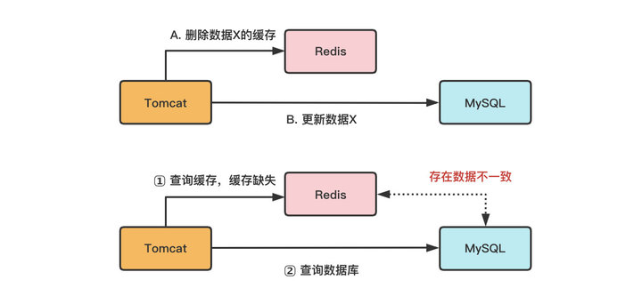
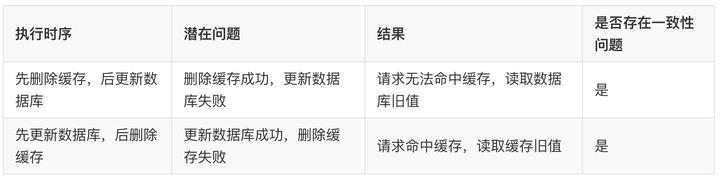
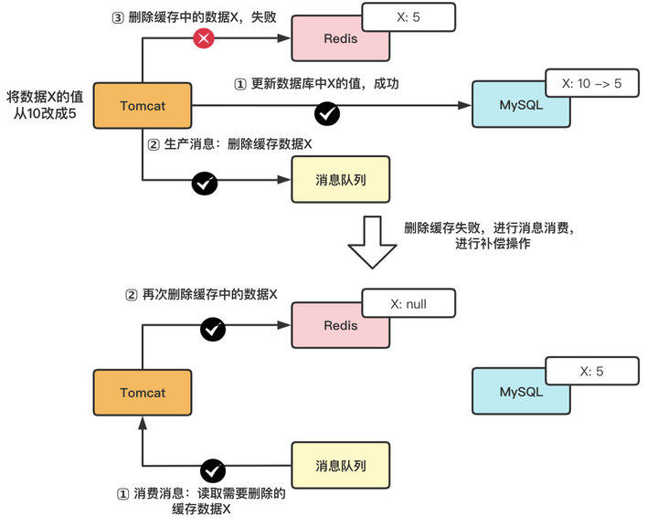
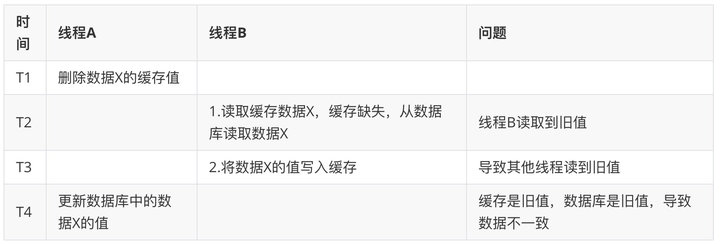
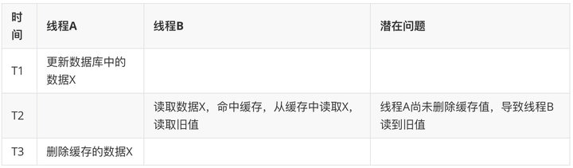
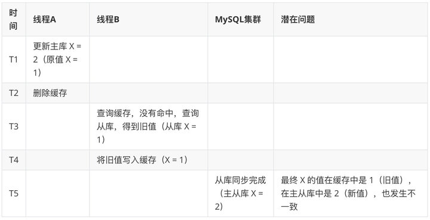
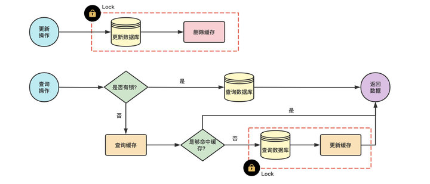
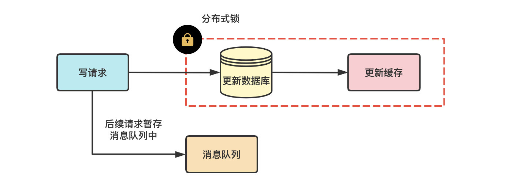

- AQS 万字图文全面解析.md.html
- Docker 镜像构建原理及源码分析.md.html
- ElasticSearch 小白从入门到精通.md.html
- JVM CPU Profiler技术原理及源码深度解析.md.html
- JVM 垃圾收集器.md.html
- JVM 面试的 30 个知识点.md.html
- Java IO 体系、线程模型大总结.md.html
- Java NIO浅析.md.html
- Java 面试题集锦（网络篇）.md.html
- Java-直接内存 DirectMemory 详解.md.html
- Java中9种常见的CMS GC问题分析与解决（上）.md.html
- Java中9种常见的CMS GC问题分析与解决（下）.md.html
- Java中的SPI.md.html
- Java中的ThreadLocal.md.html
- Java线程池实现原理及其在美团业务中的实践.md.html
- Java魔法类：Unsafe应用解析.md.html
- Kafka 源码阅读笔记.md.html
- Kafka、ActiveMQ、RabbitMQ、RocketMQ 区别以及高可用原理.md.html
- MySQL · 引擎特性 · InnoDB Buffer Pool.md.html
- MySQL · 引擎特性 · InnoDB IO子系统.md.html
- MySQL · 引擎特性 · InnoDB 事务系统.md.html
- MySQL · 引擎特性 · InnoDB 同步机制.md.html
- MySQL · 引擎特性 · InnoDB 数据页解析.md.html
- MySQL · 引擎特性 · InnoDB崩溃恢复.md.html
- MySQL · 引擎特性 · 临时表那些事儿.md.html
- MySQL 主从复制 半同步复制.md.html
- MySQL 主从复制 基于GTID复制.md.html
- MySQL 主从复制.md.html
- MySQL 事务日志(redo log和undo log).md.html
- MySQL 亿级别数据迁移实战代码分享.md.html
- MySQL 从一条数据说起-InnoDB行存储数据结构.md.html
- MySQL 地基基础：事务和锁的面纱.md.html
- MySQL 地基基础：数据字典.md.html
- MySQL 地基基础：数据库字符集.md.html
- MySQL 性能优化：碎片整理.md.html
- MySQL 故障诊断：一个 ALTER TALBE 执行了很久，你慌不慌？.md.html
- MySQL 故障诊断：如何在日志中轻松定位大事务.md.html
- MySQL 故障诊断：教你快速定位加锁的 SQL.md.html
- MySQL 日志详解.md.html
- MySQL 的半同步是什么？.md.html
- MySQL中的事务和MVCC.md.html
- MySQL事务_事务隔离级别详解.md.html
- MySQL优化：优化 select count().md.html
- MySQL共享锁、排他锁、悲观锁、乐观锁.md.html
- MySQL的MVCC（多版本并发控制）.md.html
- QingStor 对象存储架构设计及最佳实践.md.html
- RocketMQ 面试题集锦.md.html
- SnowFlake 雪花算法生成分布式 ID.md.html
- Spring Boot 2.x 结合 k8s 实现分布式微服务架构.md.html
- Spring Boot 教程：如何开发一个 starter.md.html
- Spring MVC 原理.md.html
- Spring MyBatis和Spring整合的奥秘.md.html
- Spring 帮助你更好的理解Spring循环依赖.md.html
- Spring 循环依赖及解决方式.md.html
- Spring中眼花缭乱的BeanDefinition.md.html
- Vert.x 基础入门.md.html
- eBay 的 Elasticsearch 性能调优实践.md.html
- 不可不说的Java“锁”事.md.html
- 互联网并发限流实战.md.html
- 从ReentrantLock的实现看AQS的原理及应用.md.html
- 从SpringCloud开始，聊微服务架构.md.html
- 全面了解 JDK 线程池实现原理.md.html
- 分布式一致性理论与算法.md.html
- 分布式一致性算法 Raft.md.html
- 分布式唯一 ID 解析.md.html
- 分布式链路追踪：集群管理设计.md.html
- 动态代理种类及原理，你知道多少？.md.html
- 响应式架构与 RxJava 在有赞零售的实践.md.html
- 大数据算法——布隆过滤器.md.html
- 如何优雅地记录操作日志？.md.html
- 如何设计一个亿级消息量的 IM 系统.md.html
- 异步网络模型.md.html
- 当我们在讨论CQRS时，我们在讨论些神马？.md.html
- 彻底理解 MySQL 的索引机制.md.html
- 最全的 116 道 Redis 面试题解答.md.html
- 有赞权限系统(SAM).md.html
- 有赞零售中台建设方法的探索与实践.md.html
- 服务注册与发现原理剖析（Eureka、Zookeeper、Nacos）.md.html
- 深入浅出Cache.md.html
- 深入理解 MySQL 底层实现.md.html
- 漫画讲解 git rebase VS git merge.md.html
- 生成浏览器唯一稳定 ID 的探索.md.html
- 缓存 如何保证缓存与数据库的双写一致性？.md.html
- 网易严选怎么做全链路监控的？.md.html
- 美团万亿级 KV 存储架构与实践.md.html
- 美团点评Kubernetes集群管理实践.md.html
- 美团百亿规模API网关服务Shepherd的设计与实现.md.html
- 解读《阿里巴巴 Java 开发手册》背后的思考.md.html
- 认识 MySQL 和 Redis 的数据一致性问题.md.html
- 进阶：Dockerfile 高阶使用指南及镜像优化.md.html
- 铁总在用的高性能分布式缓存计算框架 Geode.md.html
- 阿里云PolarDB及其共享存储PolarFS技术实现分析（上）.md.html
- 阿里云PolarDB及其共享存储PolarFS技术实现分析（下）.md.html
- 面试最常被问的 Java 后端题.md.html
- 领域驱动设计在互联网业务开发中的实践.md.html
- 领域驱动设计的菱形对称架构.md.html
- 高效构建 Docker 镜像的最佳实践.md.html
- 捐赠
认识 MySQL 和 Redis 的数据一致性问题
1. 什么是数据的一致性
“数据一致”一般指的是：缓存中有数据，缓存的数据值 = 数据库中的值。
但根据缓存中是有数据为依据，则”一致“可以包含两种情况：
- 缓存中有数据，缓存的数据值 = 数据库中的值（需均为最新值，本文将“旧值的一致”归类为“不一致状态”）
- 缓存中本没有数据，数据库中的值 = 最新值（有请求查询数据库时，会将数据写入缓存，则变为上面的“一致”状态）
”数据不一致“：缓存的数据值 ≠ 数据库中的值；缓存或者数据库中存在旧值，导致其他线程读到旧数据
2. 数据不一致情况及应对策略
根据是否接收写请求，可以把缓存分成读写缓存和只读缓存。
只读缓存：只在缓存进行数据查找，即使用 “更新数据库+删除缓存” 策略；
读写缓存：需要在缓存中对数据进行增删改查，即使用 “更新数据库+更新缓存”策略。
2.1 针对只读缓存（更新数据库+删除缓存）
只读缓存：新增数据时，直接写入数据库；更新（修改/删除）数据时，先删除缓存。 后续，访问这些增删改的数据时，会发生缓存缺失，进而查询数据库，更新缓存。
- 新增数据时 ，写入数据库；访问数据时，缓存缺失，查数据库，更新缓存（始终是处于”数据一致“的状态，不会发生数据不一致性问题)

- 更新（修改/删除）数据时 ，会有个时序问题：更新数据库与删除缓存的顺序（这个过程会发生数据不一致性问题）

在更新数据的过程中，可能会有如下问题：
- 无并发请求下，其中一个操作失败的情况
- 并发请求下，其他线程可能会读到旧值
因此，要想达到数据一致性，需要保证两点：
- 无并发请求下，保证 A 和 B 步骤都能成功执行
- 并发请求下，在 A 和 B 步骤的间隔中，避免或消除其他线程的影响
接下来，我们针对有/无并发场景，进行分析并使用不同的策略。
A. 无并发情况
无并发请求下，在更新数据库和删除缓存值的过程中，因为操作被拆分成两步，那么就很有可能存在“步骤 1 成功，步骤 2 失败” 的情况发生（由于单线程中步骤 1 和步骤 2 是串行执行的，不太可能会发生 “步骤 2 成功，步骤 1 失败” 的情况）。
(1) 先删除缓存，再更新数据库
(2) 先更新数据库，再删除缓存


解决策略：
a.消息队列+异步重试
无论使用哪一种执行时序，可以在执行步骤 1 时，将步骤 2 的请求写入消息队列，当步骤 2 失败时，就可以使用重试策略，对失败操作进行 “补偿”。

具体步骤如下：
- 把要删除缓存值或者是要更新数据库值操作生成消息，暂存到消息队列中（例如使用 Kafka 消息队列）；
- 当删除缓存值或者是更新数据库值操作成功时，把这些消息从消息队列中去除（丢弃），以免重复操作；
- 当删除缓存值或者是更新数据库值操作失败时，执行失败策略，重试服务从消息队列中重新读取（消费）这些消息，然后再次进行删除或更新；
- 删除或者更新失败时，需要再次进行重试，重试超过的一定次数，向业务层发送报错信息。
b.订阅 Binlog 变更日志
- 创建更新缓存服务，接收数据变更的 MQ 消息，然后消费消息，更新/删除 Redis 中的缓存数据；
- 使用 Binlog 实时更新/删除 Redis 缓存。利用 Canal，即将负责更新缓存的服务伪装成一个 MySQL 的从节点，从 MySQL 接收 Binlog，解析 Binlog 之后，得到实时的数据变更信息，然后根据变更信息去更新/删除 Redis 缓存；
- MQ+Canal 策略，将 Canal Server 接收到的 Binlog 数据直接投递到 MQ 进行解耦，使用 MQ 异步消费 Binlog 日志，以此进行数据同步；
不管用 MQ/Canal 或者 MQ+Canal 的策略来异步更新缓存，对整个更新服务的数据可靠性和实时性要求都比较高，如果产生数据丢失或者更新延时情况，会造成 MySQL 和 Redis 中的数据不一致。因此，使用这种策略时，需要考虑出现不同步问题时的降级或补偿方案。
B. 高并发情况
使用以上策略后，可以保证在单线程/无并发场景下的数据一致性。但是，在高并发场景下，由于数据库层面的读写并发，会引发的数据库与缓存数据不一致的问题（本质是后发生的读请求先返回了）
(1) 先删除缓存，再更新数据库
假设线程 A 删除缓存值后，由于网络延迟等原因导致未及更新数据库，而此时，线程 B 开始读取数据时会发现缓存缺失，进而去查询数据库。而当线程 B 从数据库读取完数据、更新了缓存后，线程 A 才开始更新数据库，此时，会导致缓存中的数据是旧值，而数据库中的是最新值，产生“数据不一致”。其本质就是，本应后发生的“B 线程-读请求” 先于 “A 线程-写请求” 执行并返回了。

或者

解决策略：
a.设置缓存过期时间 + 延时双删
通过设置缓存过期时间，若发生上述淘汰缓存失败的情况，则在缓存过期后，读请求仍然可以从 DB 中读取最新数据并更新缓存，可减小数据不一致的影响范围。虽然在一定时间范围内数据有差异，但可以保证数据的最终一致性。
此外，还可以通过延时双删进行保障：在线程 A 更新完数据库值以后，让它先 sleep 一小段时间，确保线程 B 能够先从数据库读取数据，再把缺失的数据写入缓存，然后，线程 A 再进行删除。后续，其它线程读取数据时，发现缓存缺失，会从数据库中读取最新值。
redis.delKey(X)
db.update(X)
Thread.sleep(N)
redis.delKey(X)
sleep 时间：在业务程序运行的时候，统计下线程读数据和写缓存的操作时间，以此为基础来进行估算

注意：如果难以接受 sleep 这种写法，可以使用延时队列进行替代。
先删除缓存值再更新数据库，有可能导致请求因缓存缺失而访问数据库，给数据库带来压力，也就是缓存穿透的问题。针对缓存穿透问题，可以用缓存空结果、布隆过滤器进行解决。
(2) 先更新数据库，再删除缓存
如果线程 A 更新了数据库中的值，但还没来得及删除缓存值，线程 B 就开始读取数据了，那么此时，线程 B 查询缓存时，发现缓存命中，就会直接从缓存中读取旧值。其本质也是，本应后发生的“B 线程-读请求” 先于 “A 线程-删除缓存” 执行并返回了。

或者，在”先更新数据库，再删除缓存”方案下，“读写分离 + 主从库延迟”也会导致不一致：

解决方案：
a.延迟消息
凭借经验发送「延迟消息」到队列中，延迟删除缓存，同时也要控制主从库延迟，尽可能降低不一致发生的概率
b.订阅 binlog，异步删除
通过数据库的 binlog 来异步淘汰 key，利用工具(canal)将 binlog 日志采集发送到 MQ 中，然后通过 ACK 机制确认处理删除缓存。
c.删除消息写入数据库
通过比对数据库中的数据，进行删除确认 先更新数据库再删除缓存，有可能导致请求因缓存缺失而访问数据库，给数据库带来压力，也就是缓存穿透的问题。针对缓存穿透问题，可以用缓存空结果、布隆过滤器进行解决。
d.加锁
更新数据时，加写锁；查询数据时，加读锁 保证两步操作的“原子性”，使得操作可以串行执行。“原子性”的本质是什么？不可分割只是外在表现，其本质是多个资源间有一致性的要求，操作的中间状态对外不可见。

建议：
优先使用“先更新数据库再删除缓存”的执行时序，原因主要有两个：
- 先删除缓存值再更新数据库，有可能导致请求因缓存缺失而访问数据库，给数据库带来压力；
- 业务应用中读取数据库和写缓存的时间有时不好估算，进而导致延迟双删中的 sleep 时间不好设置。
2.2 针对读写缓存（更新数据库+更新缓存）
读写缓存：增删改在缓存中进行，并采取相应的回写策略，同步数据到数据库中
- 同步直写：使用事务，保证缓存和数据更新的原子性，并进行失败重试（如果 Redis 本身出现故障，会降低服务的性能和可用性）
- 异步回写：写缓存时不同步写数据库，等到数据从缓存中淘汰时，再写回数据库（没写回数据库前，缓存发生故障，会造成数据丢失） 该策略在秒杀场中有见到过，业务层直接对缓存中的秒杀商品库存信息进行操作，一段时间后再回写数据库。
一致性：同步直写 > 异步回写 因此，对于读写缓存，要保持数据强一致性的主要思路是：利用同步直写 同步直写也存在两个操作的时序问题：更新数据库和更新缓存
A. 无并发情况

B. 高并发情况
有四种场景会造成数据不一致：

针对场景 1 和 2 的解决方案是：保存请求对缓存的读取记录，延时消息比较，发现不一致后，做业务补偿 针对场景 3 和 4 的解决方案是：对于写请求，需要配合分布式锁使用。写请求进来时，针对同一个资源的修改操作，先加分布式锁，保证同一时间只有一个线程去更新数据库和缓存；没有拿到锁的线程把操作放入到队列中，延时处理。用这种方式保证多个线程操作同一资源的顺序性，以此保证一致性。

其中，分布式锁的实现可以使用以下策略：

2.3 强一致性策略
上述策略只能保证数据的最终一致性。 要想做到强一致，最常见的方案是 2PC、3PC、Paxos、Raft 这类一致性协议，但它们的性能往往比较差，而且这些方案也比较复杂，还要考虑各种容错问题。 如果业务层要求必须读取数据的强一致性，可以采取以下策略：
（1）暂存并发读请求
在更新数据库时，先在 Redis 缓存客户端暂存并发读请求，等数据库更新完、缓存值删除后，再读取数据，从而保证数据一致性。
（2）串行化
读写请求入队列，工作线程从队列中取任务来依次执行
- 修改服务 Service 连接池，id 取模选取服务连接，能够保证同一个数据的读写都落在同一个后端服务上
- 修改数据库 DB 连接池，id 取模选取 DB 连接，能够保证同一个数据的读写在数据库层面是串行的
（3）使用 Redis 分布式读写锁
将淘汰缓存与更新库表放入同一把写锁中，与其它读请求互斥，防止其间产生旧数据。读写互斥、写写互斥、读读共享，可满足读多写少的场景数据一致，也保证了并发性。并根据逻辑平均运行时间、响应超时时间来确定过期时间。
public void write() {
Lock writeLock = redis.getWriteLock(lockKey);
writeLock.lock();
try {
redis.delete(key);
db.update(record);
} finally {
writeLock.unlock();
}
}
public void read() {
if (caching) {
return;
}
// no cache
Lock readLock = redis.getReadLock(lockKey);
readLock.lock();
try {
record = db.get();
} finally {
readLock.unlock();
}
redis.set(key, record);
}
2.4 小结
针对读写缓存时：同步直写，更新数据库+更新缓存

针对只读缓存时：更新数据库+删除缓存
较为通用的一致性策略拟定：
在并发场景下，使用 “更新数据库 + 更新缓存” 需要用分布式锁保证缓存和数据一致性，且可能存在”缓存资源浪费“和”机器性能浪费“的情况；一般推荐使用 “更新数据库 + 删除缓存” 的方案。如果根据需要，热点数据较多，可以使用 “更新数据库 + 更新缓存” 策略。
在 “更新数据库 + 删除缓存” 的方案中，推荐使用推荐用 “先更新数据库，再删除缓存” 策略，因为先删除缓存可能会导致大量请求落到数据库，而且延迟双删的时间很难评估。 在 “先更新数据库，再删除缓存” 策略中，可以使用“消息队列+重试机制” 的方案保证缓存的删除。 并通过 “订阅 binlog” 进行缓存比对，加上一层保障。
此外，需要通过初始化缓存预热、多数据源触发、延迟消息比对等策略进行辅助和补偿。 【多种数据更新触发源：定时任务扫描，业务系统 MQ、binlog 变更 MQ，相互之间作为互补来保证数据不会漏更新】
3. 数据一致性中需要注意的其他问题有哪些？
(1) k-v 大小的合理设置
Redis key 大小设计： 由于网络的一次传输 MTU 最大为 1500 字节，所以为了保证高效的性能，建议单个 k-v 大小不超过 1KB，一次网络传输就能完成，避免多次网络交互；k-v 是越小性能越好 Redis 热 key：（1） 当业务遇到单个读热 key，通过增加副本来提高读能力或是用 hashtag 把 key 存多份在多个分片中；（2）当业务遇到单个写热 key，需业务拆分这个 key 的功能，属于设计不合理- 当业务遇到热分片，即多个热 key 在同一个分片上导致单分片 cpu 高，可通过 hashtag 方式打散
[引自腾讯云技术分享]
(2 )避免其他问题导致缓存服务器崩溃，进而简直导致数据一致性策略失效 缓存穿透、缓存击穿、缓存雪崩、机器故障等问题

(3)方案选定的思路
- 确定缓存类型（读写/只读）
- 确定一致性级别
- 确定同步/异步方式
- 选定缓存流程
- 补充细节
© 2019 - 2023 Liangliang Lee. Powered by gin and hexo-theme-book.